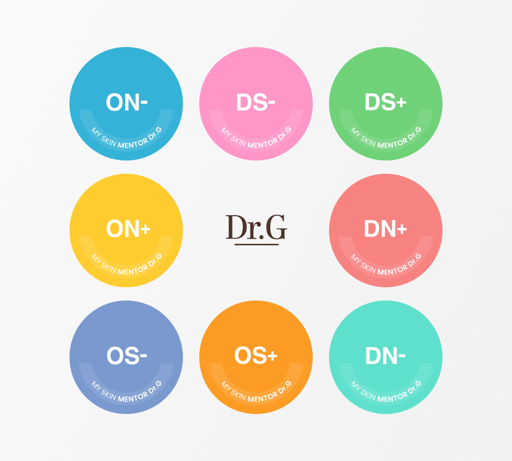

Dr.G Brand Story
브랜드 소개
건강한 피부를 위한
닥터지의 진심
닥터지의 진심
닥터지의 목표는 얼굴을 예쁘게 꾸미는 것에서
피부를 건강하게 만드는 것으로 ‘화장(化粧)’에
대한 인식을 변화시켜 나가고자 하는 것입니다.
대한 인식을 변화시켜 나가고자 하는 것입니다.
닥터지는 피부에 대한 깊이 있는 이해를 바탕으로 한 올바른 스킨케어를 지향합니다.
건강한 피부를 위해 피부 과학에 기반한 제품과 멘토링 서비스를 통해
올바른 제품, 라이프스타일을 제안합니다.
건강한 피부를 위해 피부 과학에 기반한 제품과 멘토링 서비스를 통해
올바른 제품, 라이프스타일을 제안합니다.

닥터지 Ai 피부분석
바른 피부 관리를 위해서는 피부를 바르게 아는 것이 중요합니다.
더모코스메틱의 피부과학과 37만 피부 데이터로 학습된 AI 기술이 만나,
우리에게 보다 최적화된 피부 분석 서비스가 탄생했습니다.
닥터지는 건강한 피부를 결정하는 다양한 요소를 기반으로 8가지 피부 유형을 제안합니다.
정확한 피부 유형과 고민 분석은 물론, 내 피부에 적합한 제품, 생활 습관에 대한 올바른 멘토링을
제공해 드립니다.
더모코스메틱의 피부과학과 37만 피부 데이터로 학습된 AI 기술이 만나,
우리에게 보다 최적화된 피부 분석 서비스가 탄생했습니다.
닥터지는 건강한 피부를 결정하는 다양한 요소를 기반으로 8가지 피부 유형을 제안합니다.
정확한 피부 유형과 고민 분석은 물론, 내 피부에 적합한 제품, 생활 습관에 대한 올바른 멘토링을
제공해 드립니다.
누구나, 언제, 어디서든 닥터지 AI 피부분석과 함께 건강한 피부로 관리해 보세요.
1:1 스킨 멘토링
피부 고민을 가진 사람들의 마음을 알기에, 닥터지의 피부 전문가들이 1:1로 함께 고민하고 솔루션을 드립니다.
지난 3년간, 1만 5천여 명의 고객들이 1:1 상담을 받았습니다.
지난 3년간, 1만 5천여 명의 고객들이 1:1 상담을 받았습니다.
내 피부에 대한 고민이나 궁금증을 편안하게 알려주세요. 닥터지 피부 전문가들의 1:1 카운셀링으로
피부 고민에 적합한 솔루션을 제공합니다.
피부 고민에 적합한 솔루션을 제공합니다.

AI 챗봇
언제, 어디서나. 24시간 스마트한 스킨 카운셀링 을 제공합니다. 피부 고민 상담, 바우만 테스트, 라이프 스타일별 제품 큐레이션, 스킨 케어 제안 등 피부과학 노하우를 바탕으로 한 다양한 피부 상담 서비스부터 상품 문의 및 주문∙배송 안내 등 편의 서비스 또한 제공합니다.
보다 많은 사용자들이 피부 과학을 기반으로 한 닥터지 제품과 함께 다양한 진단 및 컨설팅 서비스 를 이용할 수 있도록 프로그램을 선진화해 나갑니다.
보다 많은 사용자들이 피부 과학을 기반으로 한 닥터지 제품과 함께 다양한 진단 및 컨설팅 서비스 를 이용할 수 있도록 프로그램을 선진화해 나갑니다.